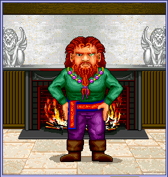
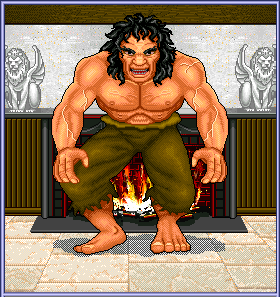

Martial Artists Attack or Kick their opponents with their hands or feet rather than using weapons. As they advance in skill level, Martial Artists can also Jumpkick, Sweep, and attack their opponents using the Chi art forms. Highly skilled Martial Artists eventually abandon armor and rely solely on their agility to avoid physical damage.
Martial Artists need particular abilities to survive in the kingdom. They must have sufficient agility to kick, jump, block and parry blows, and move quickly in close quarters. They must also have sufficient strength to damage their opponents and a strong constitution to withstand injuries from physical combat.

Mentalists focus the power of their minds into psionic energy. They must be intelligent so that they do not exhaust their psionic energy and have to resort to physical combat. They can slay their foes quickly and from a distance, without dirtying their hands in physical combat. However, Mentalists must concentrate and make each psionic attack count to avoid wastefully depleting their psionic energy.
Mentalists need particular abilities to survive in the kingdom. They must have sufficient intelligence to form psionic disciplines. Intelligence also determines how much psionic energy Mentalists initially possess and how many psionic energy points
they gain at each experience level.
True Mentalists who attain the psionics skill level of Wizard begin to regain their psionic energy at an accelerated rate.

Healers are skilled in the use of both weapons and psionics. Although they rely primarily on psionics, Healers should also be adept with weapons. A Healer uses more psionic energy to form an offensive psionic discipline than a Mentalist uses, so when Healers are in heavy combat, they might deplete their psionic energy and have to fall back on physical combat. Also, Healers, unlike Mentalists, only regain psionic energy points over time if they are undamaged, so they must stay fully healed.
Healers need particular abilities to survive in the kingdom. They must have sufficient wisdom to form psionic disciplines and sufficient strength to wield weapons. Wisdom also determines how much psionic energy Healers initially possess and how many psionic energy points they gain at each experience level.
Healers use some of the same disciplines as Mentalists and have some disciplines of their own. Healers have the special ability to use the Heal discipline to heal damage to themselves and others. A good Healer is always aware of the health of others and is willing to lay a healing hand upon the wounded. Healers who attain the healing skill level of Healer can restore life to a corpse using the CritCure discipline.

Thieves prefer hiding in the shadows and backstabbing their foes in surprise attacks rather than engaging in prolonged physical combat. They also enjoy picking locks and pilfering the possessions of other characters by stealing, mugging, and using traps. Thieves are also able to form psionic disciplines; however, they draw on their health points each time they form a discipline.
Thieves need particular abilities to survive in the kingdom. They must have sufficient agility to set and disarm traps, sufficient strength to backstab, and sufficient intelligence to form disciplines.

Fighters are masters of weapons who Attack, Shoot
or Stab their opponents.
Fighters need particular abilities to survive in the kingdom. They must have sufficient strength to damage their opponents in combat, sufficient agility to hit accurately and parry blows, and a strong constitution to withstand injuries from physical combat.
Fighters who attain the 8th experience level with an alignment of good with good tendencies can become Paladins.
Fighters who attain the 15th, 17th, and 20th experience levels can specialize in a weapon and thus receive greater skill gains and inflict increased damage in combat.

Barbarians are fierce warriors who thrive on chaos and are able to carry great amounts of weight without becoming encumbered. Their distrust of psionics makes them resistant to psionic attack; however, it also makes it difficult for them to use psionically-imbued items. They like to break powerful items and sometimes go berserk in combat.
Barbarians need particular abilities to survive in the kingdom. They must have sufficient strength to damage their opponents in combat, sufficient agility to hit accurately and parry blows, and a strong constitution to withstand injuries from physical combat.
Barbarians who attain the 15th, 17th, and 20th experience levels can specialize in a weapon and thus receive greater skill gains and inflict increased damage in combat.
Note The Barbarian trainer is on a remote and dangerous island east of Nork. If you are a beginning player, it would be wise to dedicate to one of the other professions until you are familiar with the kingdom.
Paladins are noble Fighters who have attained the 8th experience level with an alignment of good with good tendencies. Fighters can become Paladins by dedicating to the Paladin trainer. Paladins can continue to receive weapons training from the Fighter trainer, but they must go to the Paladin trainer for specialization training.
Paladins have greater combat abilities than Fighters and are more resistant to psionic attack. However, Paladins must remain faithful to the forces of good. If they slay a non-hostile creature, even accidentally, they are stripped of their Paladinhood and must seek atonement in order to regain it.
Paladins who attain the 15th, 17th, and 20th experience levels can specialize in a weapon and thus receive greater skill gains and inflict increased damage in combat.